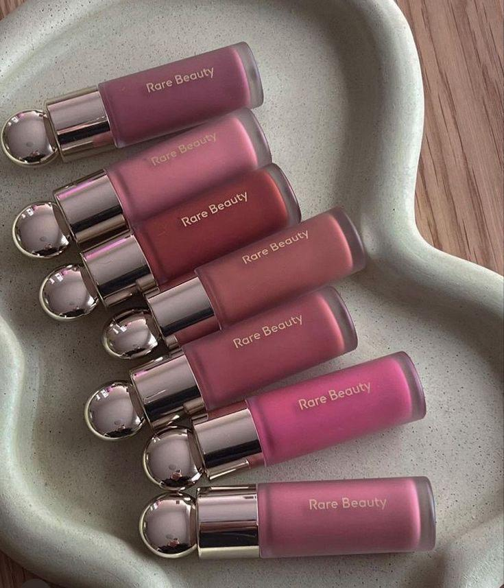
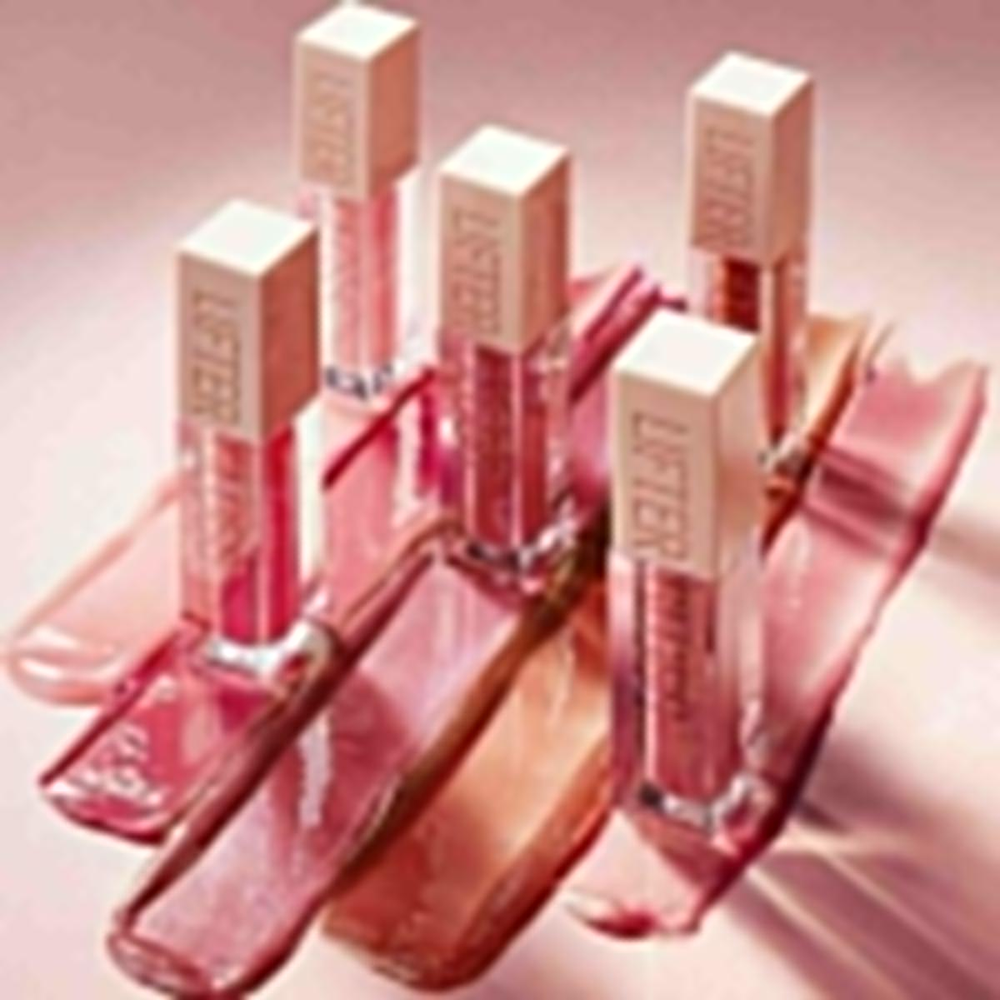
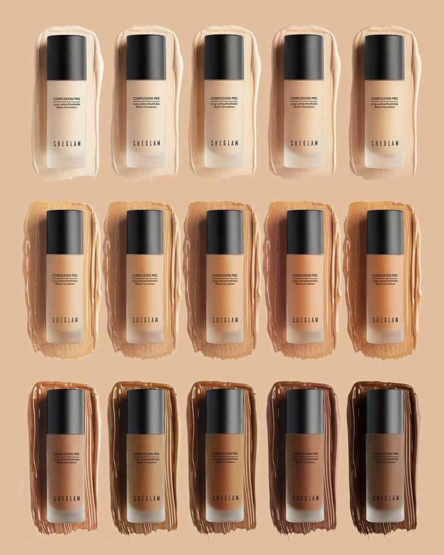
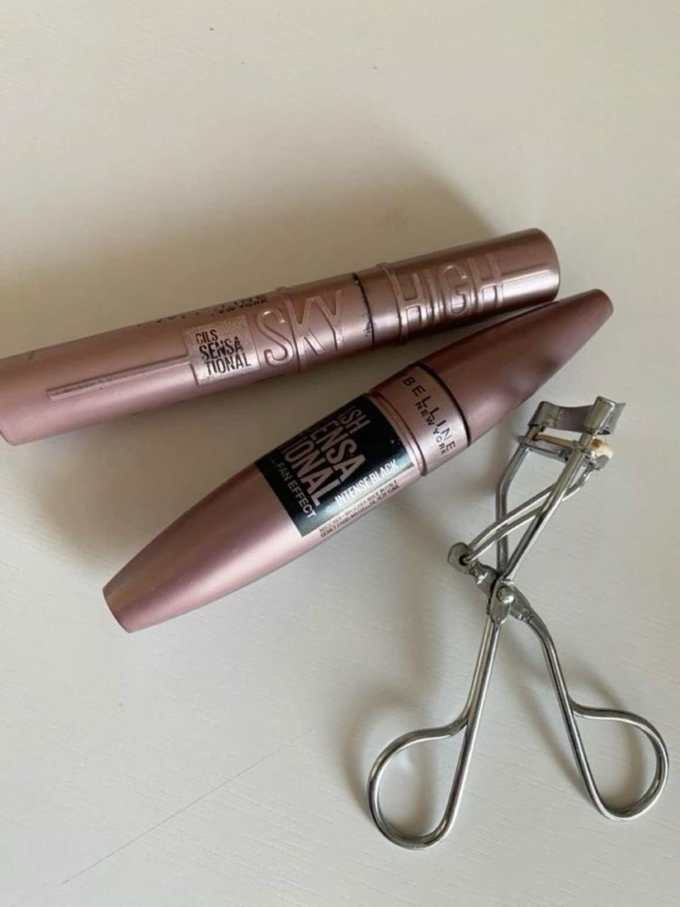
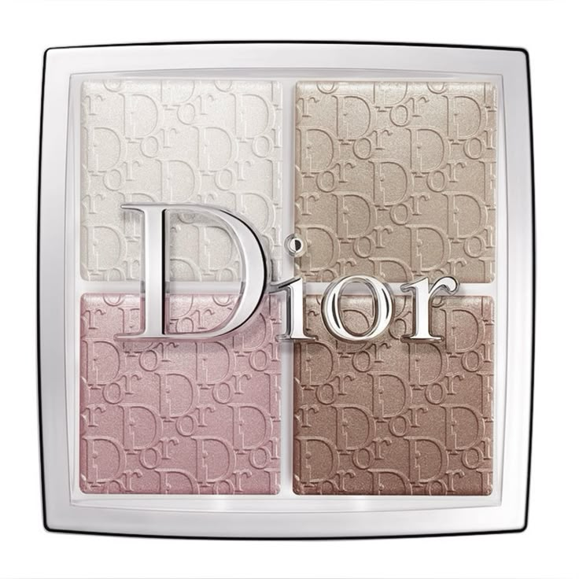
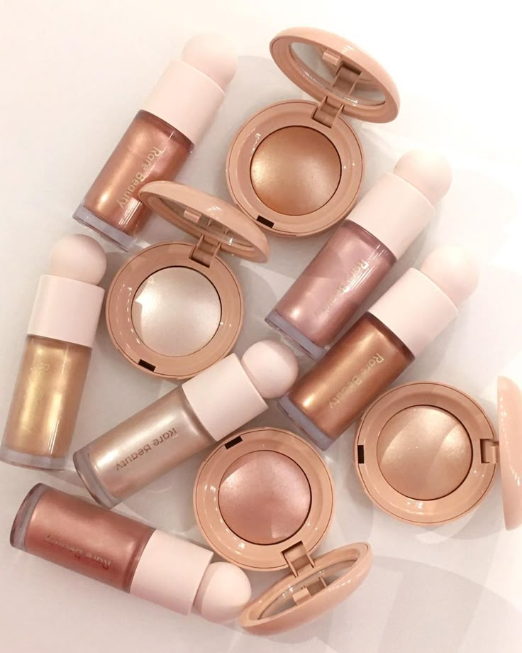
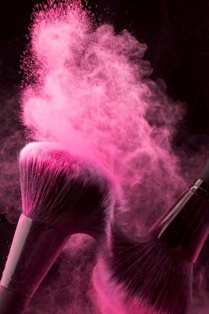

{kind=link}
"EN ESTA ÁREA ENCONTRARÁS UNA SELECCIÓN DE PRODUCTOS DE BELLEZA IMPRESIONANTES... ¡ADÉLANTE!"
-
MAQUILLAJE
      PRESIONA LA IMAGEN PARA SABER MAS
El maquillaje es una técnica artística y cosmética que utiliza diversos productos para realzar, modificar o embellecer los rasgos del rostro y cuerpo. Su objetivo principal es resaltar la belleza natural, crear efectos visuales o expresar una identidad o estilo personal. Los productos de maquillaje incluyen base, corrector, sombras, lápiz labial, rubor, iluminador, entre otros, y se aplican en diferentes áreas del rostro como los ojos, labios, mejillas y piel. Además de su uso estético, el maquillaje también puede tener un propósito funcional, como proteger la piel del sol o mejorar la apariencia de la piel en ciertos casos.
-
HERRAMIENTAS
 
PRESIONA LA IMAGEN PARA SABER MAS
Herramientas de Maquillaje:
Son utensilios utilizados para aplicar, difuminar y perfeccionar los productos de maquillaje en el rostro, como brochas, esponjas, pinzas y rizadores, que permiten un acabado preciso y profesional. Herramientas de Skincare: Son instrumentos diseñados para facilitar y mejorar las rutinas de cuidado de la piel, como rodillos de jade, cepillos faciales, exfoliadores y guasha, que ayudan a limpiar, masajear, hidratar y rejuvenecer la piel.